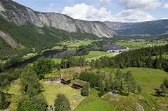
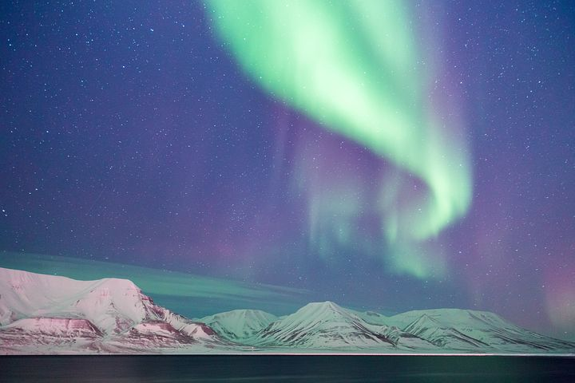

Suldal is located along the Scenic Route Ryfylke in Fjord Norway,
a few hours from Stavanger and Haugesund.
The area has been awarded the prestigious…
Vesterålen
Get ready for an Arctic adventure with
whale watching, cool museums, hiking and snowshoeing.
In Vesterålen, you can combine every wow experiences with…

Setesdal
Visit the cradle of Norwegian folk traditions!
Stop in charming villages, enjoy
fun activities, and travel with a steamboat on the Byglandsfjord.
Tromsø
From local food and mountains soaring above deep blue
fjords to the midnight sun
and the northern lights – discover the Arctic capital,…
Lysefjorden
Step on world famous mountain plateaus like
Preikestolen and Kjerag, and then challenge
yourself on the 4444 steps of the wooden staircase of…
.
Lofoten
Lofoten is known for excellent fishing,
nature attractions such as the northern lights
and the midnight sun, and small villages off the beaten track.…
.

Experience Svalbard
Experience Svalbard and Longyearbyen
with a good conscience! Longyearbyen
is the world’s northernmost sustainable destination .
Geiranger
The deep blue UNESCO-protected Geirangerfjord is
surrounded by majestic, snow-
covered mountain peaks, wild waterfalls
and lush, green vegetation.